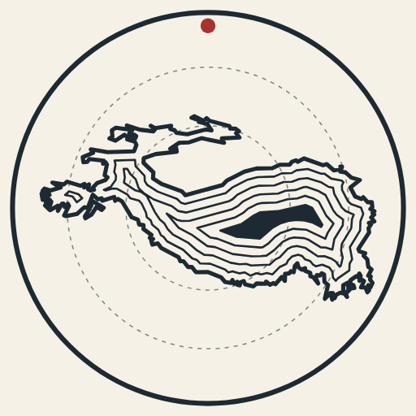
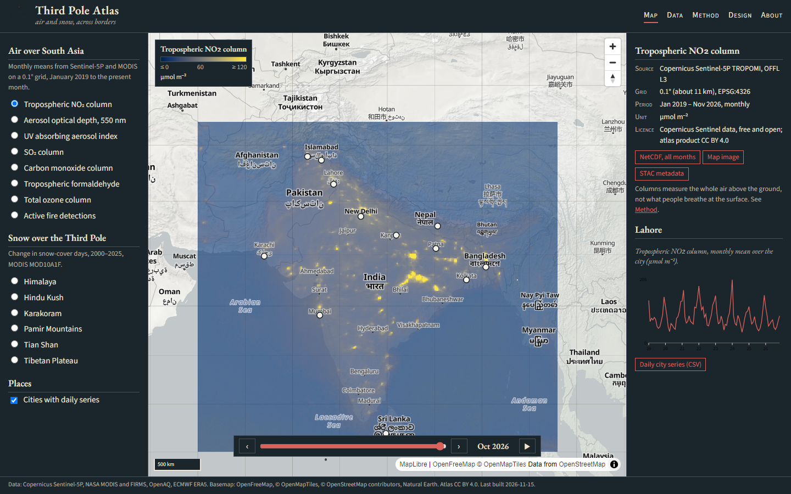
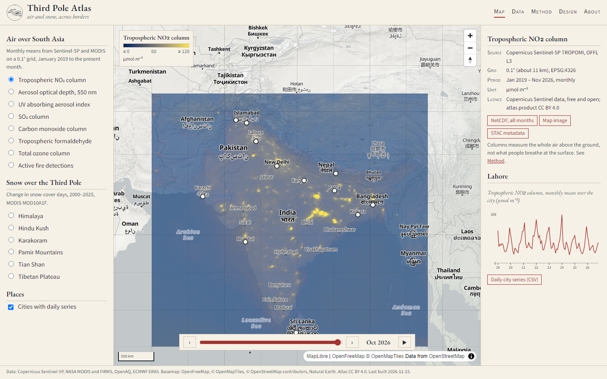
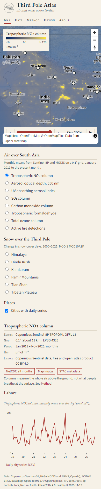

Design
The reasoning behind the look, and every version as it was.
Principles
- Map first, ink second. Paper ground, one dark ink, one red accent. Ornament only where it carries information: the graticule, the scale bar, the legend.
- Classical type. EB Garamond (Garamond's 1592 specimen) for titles and reading; Source Sans 3 for numbers, labels and controls, where a sans reads faster at small sizes. Small capitals for field names, as in printed atlases.
- Honest colour. Perceptually uniform, colour-blind safe ramps; fixed ranges across time; no-data is transparent.
- Borders drawn lightly. Air and snow cross borders; the basemap's boundaries are kept faint and names appear in local scripts.
- Responsive and accessible. One column on phones, map first; keyboard controls; text alternatives for charts; dark mode follows the reader's system.
The mark

build/build_brand.py.Brand files: logo (SVG) · mark · Instagram post · story · Facebook cover · link preview.


Journal
v1, 2026-11-15
First version. Three-column atlas layout (layers, map, information), paper palette, Garamond titles. The first basemap (CARTO raster) refused requests without a key, so the atlas moved to OpenFreeMap vector tiles (free, open, no key) with Natural Earth shaded relief beneath. The partial current month looked patchy as the default view, so the map opens on the last complete month. Low concentrations now fade so the land shows through.
v1.1, 2026-11-15: solar and wind
Added the solar and wind layers: Global Renewables Watch solar farms as circles sized by area and shaded from pale (2017) to deep brown (2024) by construction year, and wind turbines as small slate dots. A "No overlay" choice lets them be read alone. The first view already tells the story: Rajasthan is crowded with farms, Pakistan's side of the border almost empty, because Pakistan's solar boom happened on rooftops, which farm-scale mapping cannot see.
v1



